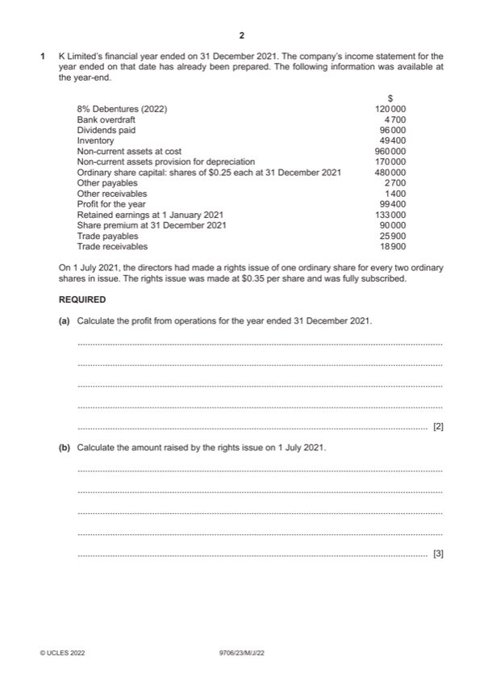

Question 1

Original paper page 2
Part 1(a) — solution
- Profit from operations = 99 400 + (8% 120 000) = 99 400 + 9600 (1) =$109 000 (1) OF 2
Mark points
- Profit from operations = 99 400 + (8% 120 000) = 99 400 + 9600 (1) =$109 000 (1) OF 2
Part 1(b) — solution
- Number of shares at 31 December: 4 480 000 = 1 920 000 (1) 3
- Shares issued 1 July: 1/3 1 920 000 = 640 000 (1)
- Amount raised: 640 000 $0.35 = $224 000 (1) OF
Mark points
- Number of shares at 31 December: 4 480 000 = 1 920 000 (1) 3
- Shares issued 1 July: 1/3 1 920 000 = 640 000 (1)
- Amount raised: 640 000 $0.35 = $224 000 (1) OF
Part 1(c) — solution
K Limited 7
Statement of changes in equity for the year ended 31 December 2021
Share Share Retained Total
capital premium earnings
$ $ $ $
Balances at 1 320 000 (1)OF 26 000 (1)OF 133 000 479 000
January 2021
Rights issue 160 000 (1) 64 000 (1)OF 224 000
Profit for year 99 400 (1) 99 400
Dividends paid (96 000) (1) (96 000)
Balances at 31 480 000 90 000 136 400 706 400 (1)OF
December 2021
2022 Page 7 of 13
9706/23 Cambridge International AS & A Level – Mark Scheme May/June 2022
Mark points
- Include the ideas shown in the solution above.
Part 1(d) — solution
K Limited 7
Statement of financial position at 31 December 2021
Assets $
Non-current assets 790 000 (1)
Current assets
Inventory 49 400
Trade and other receivables 20 300
Mark points
- Include the ideas shown in the solution above.
Part 1(e)(i) — solution
Revenue reserve: profits arising from trading activities (1) retained in the business (1). 2
Accept other valid responses.
2022 Page 8 of 13
9706/23 Cambridge International AS & A Level – Mark Scheme May/June 2022
Mark points
- Include the ideas shown in the solution above.
Part 1(e)(ii) — solution
Capital reserve: profits arising from non-trading activities (1) which are not available for distribution to shareholders in the 2
form of dividends (1)
Accept other valid responses.
Mark points
- Include the ideas shown in the solution above.
Part 1(f) — solution
Rights issue (Max 3) 7
Permanent source of capital / does not have to be repaid / increases capital (1)
Dividend payments are optional (1)
No security required (1)
Will it be successful (rights issues made in previous year) (1)
Debenture issue (Max 3)
Temporary source of finance / must be repaid / will increase liabilities (1)
Security may be required (1)
Interest charges will reduce profits / interest must be paid (1)
Will not dilute ownership (1)
Decision (1)
Accept other valid responses
Mark points
- Include the ideas shown in the solution above.